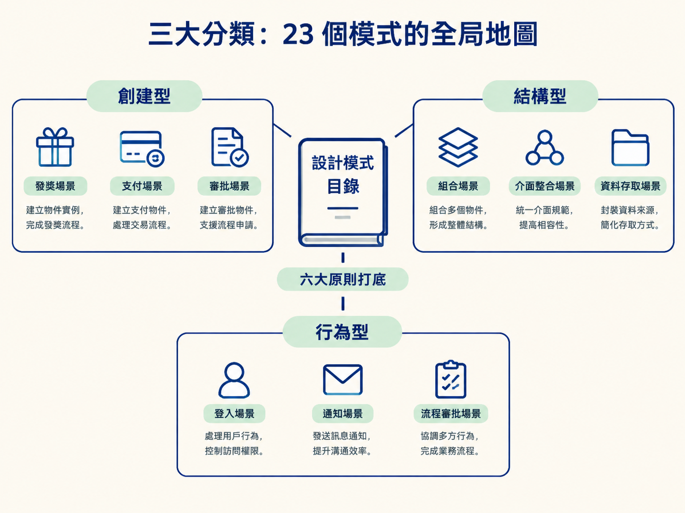
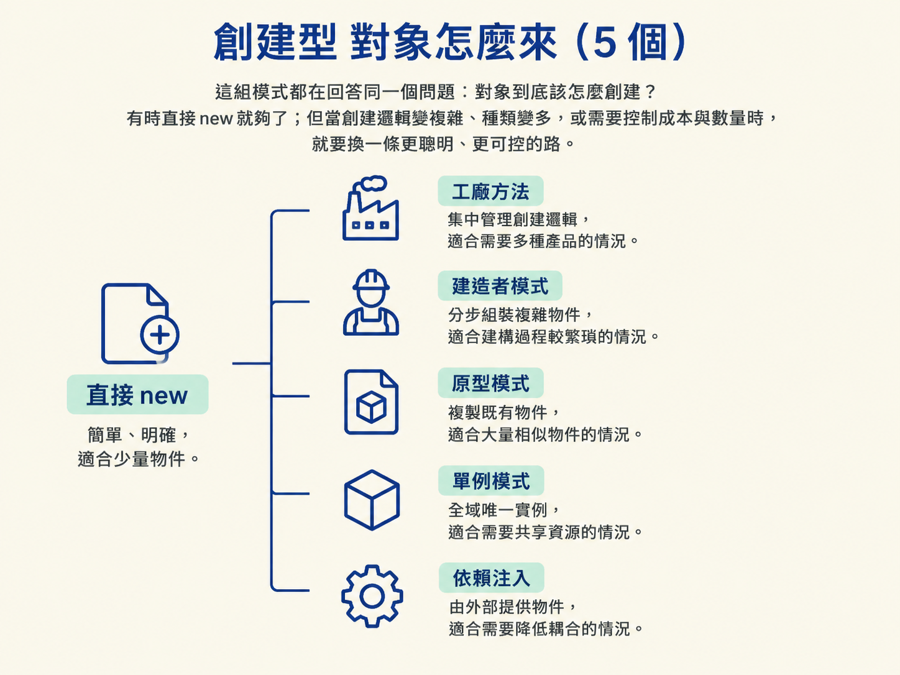
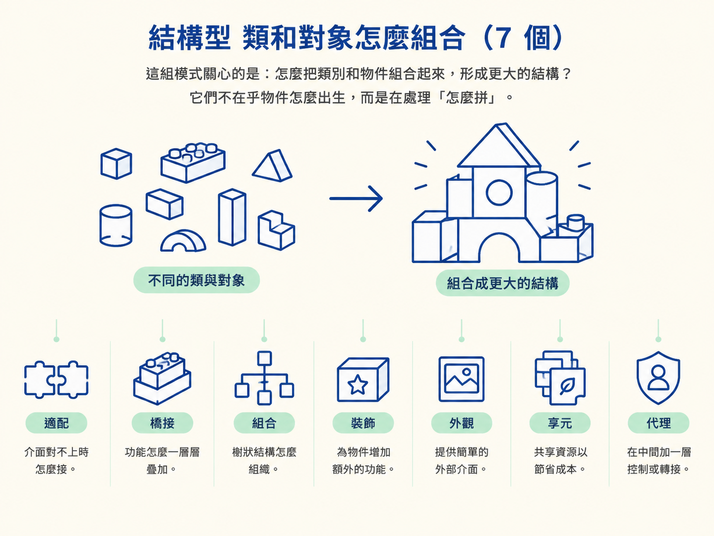
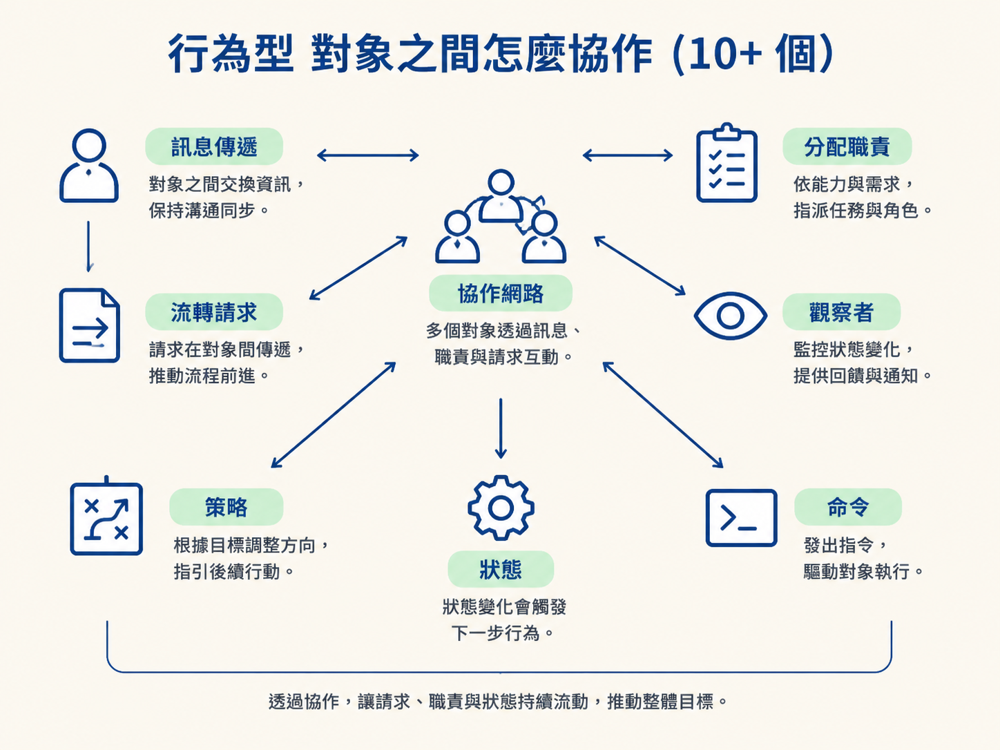

23 個模式如果一個個孤零零地背，很快就會混成一團。比較有效的方法，是先拿到一張「分類 × 場景」的地圖：把每個模式掛在熟悉的業務情境上，就像把散落的書籤插回目錄。這本書先以六大原則打底，再把 23 個模式分成創建型、結構型、行為型，每一種都對應一個真實場景。

這組模式都在回答同一個問題：對象到底該怎麼創建？有時直接 new 就夠了；但當創建邏輯變複雜、種類變多，或需要控制成本與數量時，就要換一條更聰明、更可控的路。

| 模式 | 綁定的真實場景 |
|---|---|
| 工廠方法 | 多種商品、介面各異的「統一發獎服務」 |
| 抽象工廠 | 單機 Redis 升級成叢集，兼容 EGM / IIR 兩套介面 |
| 建造者 | 裝修套餐：基本物料不變，但組合方式常常變動 |
| 原型 | 試卷混排：透過複製快速產生物件，節省建立成本 |
| 單例 | 全局只需要一份的物件 |
這組模式關心的是：怎麼把類別和物件組合起來，形成更大的結構？它們不在乎物件怎麼出生，而是在處理「怎麼拼」：介面對不上時怎麼接、功能怎麼一層層疊加、樹狀結構怎麼組織，以及複雜的子系統怎麼藏在簡單介面後面。

| 模式 | 綁定的真實場景 |
|---|---|
| 適配器 | 多種 MQ 訊息格式（欄位名稱相同但格式不同）統一接入 |
| 橋接 | 支付渠道 × 支付模式：微信／支付寶 × 刷臉／指紋／密碼 |
| 組合 | 人群發券：用性別、年齡等規則組成決策樹 |
| 裝飾器 | SSO 驗證：不修改原本的類別，也能疊加登入驗證 |
| 外觀 | 白名單中介軟體：替複雜子系統提供統一門面 |
| 享元 | 秒殺活動：共享物件、分離外部狀態，並掛接 Redis 快取 |
| 代理 | MyBatis mapper：即使沒有實作類別，也能透過介面呼叫 |
這組模式回答的是：物件之間怎麼通信、怎麼分配職責、怎麼流轉？重點不在物件長什麼樣，而在請求如何傳遞、工作如何分工，以及狀態如何推動下一步行為。

| 模式 | 綁定的真實場景 |
|---|---|
| 責任鏈 | 618 大促審批鏈：動態編排多級處理鏈 |
| 命令 | 點單 → 烹飪：把請求封裝成物件 |
| 迭代器 | 組織樹遍歷：用統一方式存取聚合物件 |
| 中介者 | 手寫 ORM 的 SqlSession：集中協調，解開網狀依賴 |
| 備忘錄 | 設定回滾：保存狀態快照 |
| 觀察者 | 搖號中籤通知：一對多通知，並可對照 MQ 事件 |
| 狀態 | 審核狀態流轉：由狀態驅動行為 |
| 策略 | 優惠券計算：替換不同的演算法族 |
| 模板方法 | 爬蟲 → 海報：固定流程骨架，由子類別填入步驟 |
| 訪問者 | 校長／家長視角：把資料結構和操作分開 |
主要來源：《重學 Java 設計模式》「目錄」——按照創建型、結構型、行為型排列全部模式，並替每種模式綁定一個真實業務場景。後續各個模式章節，也會沿用這張地圖中的場景繼續展開。